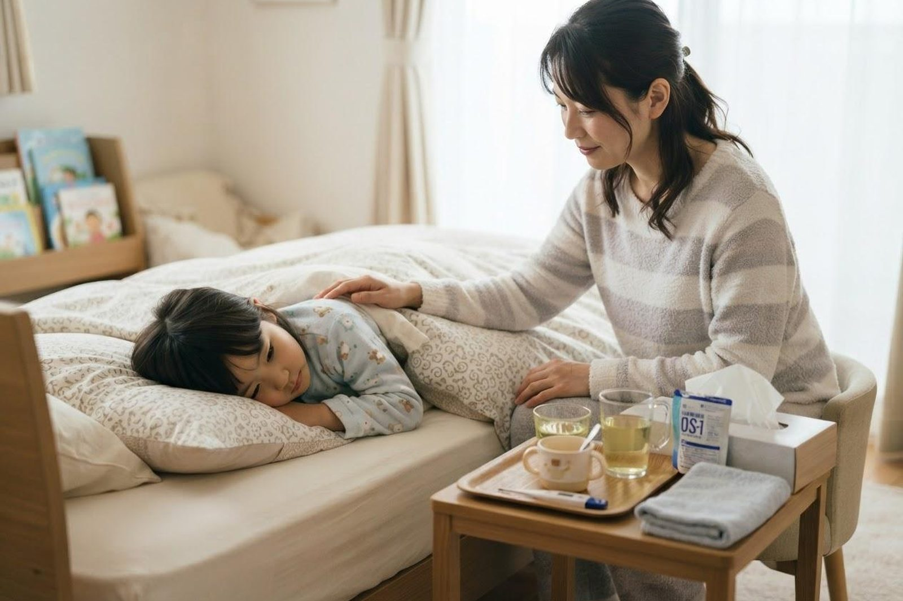

子どもが吐いて下痢もしています。水分はどのようにとらせればいいですか？
A. 回答お子さんの嘔吐と下痢の多くはウイルスによる胃腸炎が背景にあるとされ、数日で落ち着いていくことが多いといわれています。この間にいちばん気をつけたいのが脱水です。ポイントは「一度にたくさん飲ませない」こと。吐いた直後は30分ほど胃を休ませ、その後に小さじ1杯（5mL程度）の経口補水液を5分おきに、スプーンで少しずつ飲ませていく方法が一般的とされています。吐かずに続けられるようなら、少しずつ量と間隔を広げていきます。おしっこが半日以上出ない、唇や舌が乾いている、涙が出ない、ぐったりして反応が乏しいといったときは、様子を見ずに受診をご検討ください。

子どもの嘔吐・下痢でよくみられる原因
お子さんの急な嘔吐と下痢には、次のような背景が考えられます。
- ウイルス性の胃腸炎：ノロウイルスやロタウイルスなどによるもので、お子さんの嘔吐・下痢の原因として最も多いとされています。吐き気や嘔吐が先に出て、少し遅れて下痢が続く経過をとることが多いといわれます。
- 細菌による胃腸炎・食中毒：強い腹痛や高い熱、血液の混じった便を伴うことがあります。
- かぜや中耳炎など、おなか以外の感染症：小さなお子さんでは、のどや耳の感染症に伴って吐いてしまうこともあります。
- 胃腸炎以外の病気：頻度は高くありませんが、腸重積や虫垂炎、脱水以外の全身の病気が隠れている場合もあります。強い腹痛を繰り返す、便に血が混じる、嘔吐物が緑色（胆汁色）といったときは注意が必要とされています。
水分の飲ませ方（具体的な手順）
吐いているときにコップ1杯を一気に飲ませると、胃が刺激されてまた吐いてしまい、かえって水分が減ってしまいます。次の順番を目安にしてください。
- ① 吐いた直後は少し待つ：すぐには飲ませず、30分ほど（少なくとも20〜30分）胃を休ませます。この間は口をゆすがせる程度にとどめます。
- ② 小さじ1杯から始める：ティースプーン1杯（5mL程度）の経口補水液を、5分おきに1杯ずつ。ペットボトルのキャップ1杯分とほぼ同じ量です。スプーンやスポイト、製氷皿で作った小さな氷を舐めさせる方法もあります。
- ③ 吐かなければ少しずつ増やす：30分〜1時間ほど吐かずに続けられたら、小さじ2杯、大さじ1杯と少しずつ増やし、間隔も広げていきます。あせらず段階的に進めるのがコツです。
- ④ 途中で吐いてしまったら：また5〜10分ほど休ませ、①②の少量から仕切り直します。「失敗」ではないので、根気よく繰り返してください。
- ⑤ 量の目安：下痢や嘔吐が1回あるごとに、体重1kgあたり10mL程度（体重10kgのお子さんなら100mL程度）を追加で補う、という考え方が知られています。
- ⑥ 授乳中の赤ちゃん：母乳は基本的に続けてよいとされています。1回を短めにして回数を増やすと負担が減ります。
- ⑦ 食事は無理をしない：吐き気が落ち着き、食べたがるようであれば、おかゆ・うどん・すりおろしりんご・バナナなど消化のよいものから少量ずつ再開します。何日も絶食させる必要はないとされています。
飲ませるものの選び方
下痢や嘔吐では水分と一緒に塩分（電解質）も失われるため、水やお茶だけでは補いきれないことがあります。水分・塩分・糖分がバランスよく配合された経口補水液（薬局などで購入できる、乳幼児から使えるタイプのもの）が適しているとされています。
| 項目 | 適しているとされるもの | 控えたほうがよいとされるもの |
|---|---|---|
| 飲み物 | 経口補水液、乳児用のイオン飲料、麦茶（補水液と併用）、母乳 | 果汁100％ジュース、炭酸飲料、糖分の多いスポーツドリンク、牛乳や乳製品 |
| 理由 | 体液に近い割合で水分と塩分を補える。少量でも効率よく吸収されるとされています | 糖分が多いと腸に水を引き込み、下痢が強まることがあるとされています |
| 温度・飲み方 | 常温〜少し冷たいくらい。スプーンで少量ずつ | 冷たすぎるもの、コップで一気に飲ませること |
市販の下痢止めや吐き気止めを自己判断で使うことはおすすめできません。感染性の胃腸炎では、下痢は原因となるものを体の外へ出す働きも担っていると考えられており、お子さんへの使用は必ず医師にご相談ください。
脱水のサインと受診の目安
お子さんは体の水分の余力が少なく、脱水が短時間で進みやすいとされています。次のチェックで気になる項目があれば、早めにご相談ください。
おうちで確認したい脱水のサイン
- おしっこの回数・量が普段よりはっきり少ない（おむつが濡れない）
- 唇や舌、口の中が乾いている
- 泣いても涙が出ない
- 元気がなく、遊ばない・うとうとしている
- 目がくぼんで見える、赤ちゃんで大泉門（頭の柔らかい部分）がへこんでいる
- 手足が冷たい、顔色が悪い
夜間・休日にお子さまのことで迷われるときは、こども医療でんわ相談「＃8000」（岡山県）にご相談いただけます。日本小児科学会の「こどもの救急」も目安になります。
すぐに受診を検討してください
- おしっこが半日以上出ていない
- 唇や舌が乾いている、泣いても涙が出ない
- ぐったりして、呼びかけへの反応が乏しい・起こしても目を覚まさない
- 繰り返し吐いてしまい、水分がまったくとれない
- 便に血が混じる（血便）、イチゴジャムのような便が出る
- 嘔吐物が緑色（胆汁色）である
- おなかを痛がって激しく泣くことを繰り返す、おなかが張って硬い
- けいれんがある、生後3か月未満で発熱を伴う
早めの受診をおすすめします
- 嘔吐や下痢が2〜3日たっても軽くならない、いったん良くなったのにぶり返した
- 飲む量・食べる量が普段よりかなり減っている
- 熱が続く、機嫌が悪い状態が長く続く
- 体重が減ってきた、おむつ替えの回数が明らかに減った
- 持病があり治療中で、水分や食事がとれていない
- 家庭での水分の飲ませ方や、保育園・学校への登園登校の判断に迷う
夜間・休日で迷ったときは 受診したほうがよいか判断に迷うときは、全国共通の「こども医療でんわ相談 ＃8000」に電話すると、お住まいの都道府県の窓口につながり、小児科医師や看護師に相談できます（対応時間は都道府県ごとに異なります）。意識がはっきりしない、けいれんが続くなど緊急と感じる場合は、迷わず救急要請・救急外来の受診をご検討ください。
家庭内でうつさないための対策
ウイルス性の胃腸炎はごくわずかな量でも広がるとされ、症状が治まった後もしばらく便からウイルスが出続けることがあります。
- 嘔吐物・便の片づけ：使い捨て手袋とマスクを着け、ペーパータオルや新聞紙で外側から内側へ静かに拭き取ります。乾いて舞い上がる前に処理し、使ったものはポリ袋の口を縛って捨てます。
- 消毒は塩素系で：拭き取った後は、家庭用の塩素系漂白剤（次亜塩素酸ナトリウム）を薄めた液で消毒します。嘔吐物・便で汚れた床などは0.1％程度、ドアノブや便座など手が触れる場所は0.02％程度が目安とされています。しばらく置いてから水拭きし、金属部分はさびを防ぐためしっかり拭き取ってください。この種のウイルスにはアルコール消毒は効きにくいとされています。
- 手洗いを最優先に：おむつ替えやトイレの後、調理・食事の前に、石けんと流水で指の間・爪の間・手首まで洗います。タオルの共用は避け、使い捨てのペーパータオルが安心です。
- 衣類・シーツ：汚れたものは他の洗濯物と分け、下洗いしてから塩素系漂白剤に浸すか、熱水で洗って高温乾燥させます。
- 入浴：症状のあるお子さんは入浴の順番を最後にし、湯船につからずシャワーで済ませると広がりにくくなります。
当院での対応（受診の実際）
いなだ医院は小児科・内科・感染症内科・消化器内科（胃腸科）を標榜しており、お子さんも保護者の方も同じ窓口でご相談いただけます。予約なしで当日受診いただけます。診察では、いつから何回吐いたか、水分がどのくらい入っているか、最後の排尿はいつかなどをうかがい、全身の状態やおなかの様子、脱水の程度を確認します。必要に応じて血液検査や超音波（エコー）検査などで、脱水の程度や胃腸炎以外の病気の可能性を確認します。診察自体は数分から十数分、検査を行う場合は結果までお時間をいただくことがあります。水分がどうしてもとれない場合には、点滴での補液を行うこともあります。
これらの診察・検査は保険診療の対象となります（お住まいの自治体の子ども医療費助成が使える場合があります）。費用の詳細はお問い合わせください。受診時は保険証・子ども医療費受給資格者証・母子健康手帳・お薬手帳をお持ちください。着替えやビニール袋、タオルもあると安心です。嘔吐や下痢のあるお子さんは、来院前にお電話（086-525-0600）でひとことご連絡いただけますと、待合での動線や診察の順番を調整しやすくなります。駐車場は無料で22台分ご用意しています。
受診時に伝えていただきたいこと
- いつから始まり、嘔吐・下痢がそれぞれ何回あったか
- 水分をどのくらい飲めているか、最後におしっこが出たのはいつか
- 便の色や性状（水様か、血が混じっていないか）、嘔吐物の色
- 発熱・腹痛・機嫌など、ほかに気になる様子はあるか
- ご家族や保育園・学校で同じ症状の方がいるか、直前に食べたもの
- 普段の体重、服用中のお薬（お薬手帳）
参考にした情報
水分がとれない、ぐったりしているなど不安なときは、迷わずご相談ください。予約なしで当日受診いただけます。
最終更新：2026年8月26日